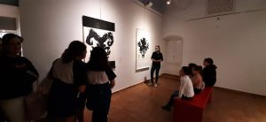

Arte Y Mediacion Finaliza La Exposicion 3
martes, 3 de mayo de 2022
ARTE Y MEDIACIÓN: FINALIZA LA EXPOSICIÓN «ORIENTE + OCCIDENTE 东西方画廊» DE ENRIQUETA HUESO & KENRYO HARA

Entre las diversas actividades de mediación realizadas en torno a la exposición «Oriente + Occidente 东西方画廊», fruto de la convocatoria internacional, destacan las visitas guiadas realizadas a los alumnos de los Institutos de Educación Secundaria de la localidad y los trabajos elaborados por los alumnos participantes en el taller de Arte en el Museo, niños, adultos y personas con diversidad funcional han experimentado la técnica del collage inspirándose en las obras de Enriqueta Hueso.
El viernes 29 de abril en el espacio educativo se realizó un taller de arte en familia denominado El Museo sale de Paseo donde unos 20 participantes de diversas edades visitaron la exposición y decoraron sus bolsas ecológicas con motivos orientales.
Destacar también que el sábado 30 de abril recibimos la visita de la directora del Institut Universitari d’Estudis de les Dones (IUED) de la Universitat de València, Gabriela Moriana Mateo acompañada de la comisaria de la exposición Amparo Zacarés en representación de la Galería O+O. Artistas y comisarias nos han trasladado la satisfacción por la muestra realizada en el Museo del Mar que ha sido visitada por más de 4.000 personas durante el mes de duración en el que se ha podido disfrutar de esta magnífica obra.

